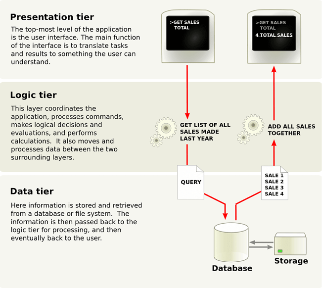

Typy webových aplikací
Vícevrstvé webové aplikace
- Díky pokročilým webovým technologiím je možné realizovat webovým prostředím stále složitější a komplexnější aplikace, včetně informačních systémů, cloudových služeb apod.
- Současné webové aplikace jsou strukturovány do více vrstev, tradičně se uvádějí tři základní vrstvy:
- Funkci prezentační vrstvy plní zpravidla webový prohlížeč.
- Logickou vrstvu představují technologie na dynamické generování webových stránek (PHP, ASP.NET, JSP apod.), jež se nejčastěji zpracovávají na straně webového serveru.
- Datovou vrstvu mohou tvořit databáze umístěné na databázovém serveru, ale zdrojem dat mohou být také datové soubory nebo internetové služby.
